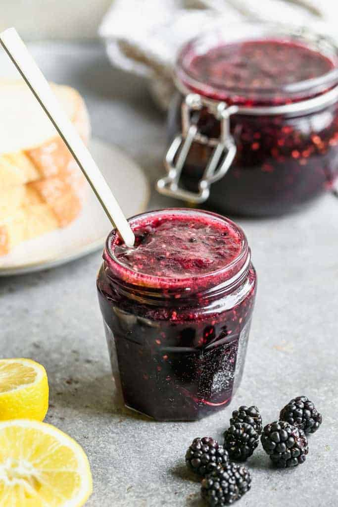

Homemade Blackberry Jam
Home

Description
This homemade blackberry jam recipe only needs 4 ingredients and will help you preserve the flavors of Summer to enjoy all year!
Ingredients
- 8 cups blackberries
- 1 tablespoon lemon juice
- 3.5 cups granulated sugar
- 1 packet liquid fruit pectin
Steps
- Clean berries just before using. Add the blackberries and lemon juice to an extra-large saucepan. Mash with a potato masher and simmer for a few minutes, to break down the fruit.
- Add sugar and stir to combine. Turn burner to medium low, stirring occasionally, cooking for several minutes until sugar has dissolved.
- Increase the heat to medium high, and cook, stirring constantly, until the mixture comes to a full boil (a rolling boil that can't be stirred down).
- Add the pouch of pectin, stirring continuously, and allow to return to a full boil. Set a timer for 1 minute, stirring continuously, and remove from the heat after 1 minute.
- Pour jam into prepared jars and seal with lids.
- Allow the jam to cool at room temperature for 24 hours, then store in the fridge for up to 1 month, or the freezer for up to 1 year.